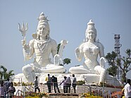

VISHAKAPATNAM
Visakhapatnam, also known as Vizag or Waltair, is the largest and most populous metropolitan city in the Indian state of Andhra Pradesh. Nestled between the Eastern Ghats and the Bay of Bengal, Vizag is often called the "Jewel of the East Coast" for its natural beauty and vibrant culture. It is the second largest city on the east coast of India after Chennai and the fourth largest in South India. Recognized under the Smart Cities Mission, it is also the headquarters of Visakhapatnam district. With a strong industrial base and a thriving port, the city plays a vital role in India's economy.
History
Visakhapatnam's history dates back to the 6th century BCE. It was ruled by the Andhra Satavahanas, Vengi dynasty, Pallavas, and Eastern Ganga kings. The city was once a bustling ancient port with trade links to the Middle East and Rome. Small boats known as Masula boats ferried goods from the shore to larger ships anchored in deep waters.
Over the centuries, the city came under the rule of the Qutb Shahis, the Kingdom of Jeypore, the Mughals, the Nizam of Hyderabad, and later the French. In 1804, the British East India Company took control after the Battle of Vizagapatnam. During colonial times, Vizag developed into an important administrative and naval hub, a status it retained after India’s independence in 1947.
Beyond the major dynasties, local legends suggest that the city derived its name from the temple of Lord Visakheswara, which once stood by the shore. Maritime trade was a key factor in its growth, with exports like ivory, textiles, and spices traveling to Southeast Asia and beyond. The harbor area became an important stop for merchants and travelers on the Coromandel Coast. Under British rule, the port was expanded, railways were introduced, and educational institutions were established, laying the foundation for its modern development. Even today, colonial-era structures like the lighthouse, old churches, and administrative buildings stand as silent witnesses to this layered history. The strategic location of Vizag has also made it significant in India’s naval defense, hosting major shipbuilding facilities and naval bases. This blend of ancient maritime heritage, dynastic influences, and colonial urban planning has given Visakhapatnam a distinctive historical character that continues to shape its identity.
.jpg)
Geography
Vizag lies between the Eastern Ghats and the Bay of Bengal, covering an area of about 682 square kilometers. The city is surrounded by scenic hills such as Simhachalam, Yarada, and the lush Kambalakonda Wildlife Sanctuary. Its natural harbor and proximity to both hills and sea make it one of India's most picturesque cities.
The coastline of Vizag stretches for approximately 28 kilometers, featuring sandy beaches, rocky cliffs, and lush green patches. The Eastern Ghats act as a natural barrier, offering unique biodiversity and protecting the city from extreme inland weather conditions. The city’s terrain is a mix of flatlands near the coast and hilly regions toward the west, creating stunning viewpoints and hiking spots. Rivers like Meghadrigedda and Gambheeram flow through the area, supporting agriculture in surrounding rural zones. The famous Dolphin’s Nose promontory, a rocky headland resembling a dolphin’s beak, is a well-known geographical landmark and houses a lighthouse that guides ships into the harbor. The city is also home to several lakes and reservoirs such as Mudasarlova and Meghadrigedda reservoirs, which serve as water sources. Its diverse topography has made Vizag an important ecological zone, attracting researchers and nature enthusiasts. In recent years, urban expansion has reached the foothills and coastal plains, but the government and local communities have been working to preserve its natural beauty. From sunrise views at Tenneti Park to sunsets at Yarada Beach, the geographical setting of Vizag offers an ever-changing canvas of colors, making it one of the most scenic coastal cities in India.
Climate
Vizag has a tropical wet and dry climate. Summers are warm with temperatures peaking in May, while winters are mild and pleasant. The city receives rainfall from both the southwest and northeast monsoons. Its coastal location ensures a humid climate, and occasional cyclones bring heavy rains and winds.
The average summer temperature ranges between 28°C and 35°C, though heat waves can occasionally push it higher. Humidity during summer often reaches above 70%, making the heat feel more intense. The onset of the southwest monsoon in June brings moderate to heavy rains, which replenish water resources and cool the atmosphere. Between October and December, the northeast monsoon adds another spell of rainfall, often accompanied by short but intense thunderstorms. Cyclonic storms from the Bay of Bengal occasionally impact the city, bringing strong winds and high tides. Winters, from December to February, are mild, with temperatures hovering between 18°C and 28°C—ideal for tourism and outdoor activities. The sea breeze, a regular feature along the coast, plays a crucial role in regulating temperatures throughout the year. Vizag’s climate also influences its agricultural practices, fishing schedules, and even cultural events, as festivals often coincide with pleasant weather periods. Over recent decades, urbanization has slightly altered local weather patterns, with increased concrete structures contributing to the urban heat island effect. However, green belts and parks still provide relief in many areas. The climate, though occasionally challenging during monsoon extremes, is one of the key reasons why people find Vizag livable and appealing, offering a balance between coastal charm and comfortable seasonal variation.
Language
Telugu is the primary and official language spoken in Visakhapatnam. The city also has speakers of Tamil, Odia, Hindi, Bengali, and Urdu due to its diverse population. The local Telugu dialect has a distinctive coastal accent, especially in the northern Andhra region.
The coastal Telugu spoken here is known for its softer intonation compared to the inland dialects, with certain words borrowed from neighboring states due to centuries of trade and migration. Tamil influence is seen in the southern suburbs, where fishing communities maintain their linguistic heritage. Odia is spoken by descendants of laborers and traders who moved here during the colonial period, especially near the port. Hindi serves as a link language in business districts and among migrant workers from North India, while Urdu has cultural roots in communities that settled during the Nizam’s rule. English, though not a mother tongue, is widely used in education, government offices, and corporate sectors. Language in Vizag isn’t just about communication—it reflects the city’s multicultural fabric. Festivals, street markets, and neighborhoods often become melting pots where multiple languages blend in casual conversation. Even local cuisine has dish names influenced by multiple tongues. This linguistic diversity fosters cultural tolerance and enriches the city’s identity. Schools here often offer multiple language options, allowing children to grow up multilingual. Radio and television programs cater to different linguistic groups, further highlighting Vizag’s inclusive atmosphere. The ease with which people switch between languages is a unique skill among Vizag’s residents, making visitors feel welcome regardless of their mother tongue.
Administration
The Greater Visakhapatnam Municipal Corporation (GVMC) manages the city’s civic needs. Established in 1858 as a municipality, it became a corporation in 1979 and expanded into a Greater Municipal Corporation in 2005. The city is divided into 9 administrative zones and 98 wards.
GVMC oversees everything from road maintenance and street lighting to sanitation, waste management, and public health services. It works in coordination with the Visakhapatnam Urban Development Authority (VUDA) for city planning, zoning regulations, and infrastructure projects. Administrative efficiency is crucial here because Vizag is both a growing industrial hub and a tourist destination. Each of the 9 zones has its own office to handle local issues more efficiently, ensuring faster response times for residents. The corporation also plays a role in disaster management, particularly in preparing for and responding to cyclones, which are a seasonal threat. Smart City initiatives, such as digital governance platforms, smart street lighting, and real-time waste tracking, have been introduced to improve service delivery. Public participation is encouraged through ward committees, allowing citizens to voice concerns and suggest improvements. The city’s administration also collaborates with environmental bodies to preserve green spaces and coastal ecosystems. Projects like beach beautification, sewage treatment plants, and traffic decongestion measures are ongoing. The GVMC’s budget is funded by property taxes, government grants, and service charges, which are reinvested into civic amenities. By balancing modernization with heritage conservation, Vizag’s administration aims to create a city that is sustainable, efficient, and inclusive.
Economy
Vizag is among India’s top industrial cities, with a GDP exceeding $43 billion. Major sectors include shipping, steel, petroleum, and information technology. The city has two major ports—Visakhapatnam Port and Gangavaram Port—which handle millions of tonnes of cargo annually. It also houses the Hindustan Shipyard, Eastern Naval Command headquarters, and several IT and pharmaceutical companies.
The Visakhapatnam Port Trust is one of the busiest in the country, facilitating international trade in iron ore, coal, petroleum products, and fertilizers. Gangavaram Port, known for its deep-water capacity, complements this by handling bulk cargo efficiently. The steel industry is anchored by Rashtriya Ispat Nigam Limited (Vizag Steel Plant), which is a major employer and economic driver. Petroleum refining and distribution are led by Hindustan Petroleum Corporation Limited (HPCL), whose refinery here is among the largest in South India. The IT sector has grown rapidly in the last decade, with companies like Wipro, Tech Mahindra, and Conduent operating in special economic zones. Pharmaceutical manufacturing, led by firms like Laurus Labs, adds to the industrial diversity. The tourism industry, fueled by beaches, hills, and heritage sites, contributes significantly to local businesses such as hotels, restaurants, and handicraft sales. Fisheries are another important economic activity, with Vizag being a major center for seafood exports. Small-scale industries, including handicrafts, cashew processing, and coir products, provide employment to thousands. The city’s strategic location, infrastructure, and connectivity make it a preferred destination for new investments. With ongoing metro rail proposals, industrial corridor projects, and port expansions, Vizag’s economy is poised for further growth while maintaining its role as a critical economic hub for Andhra Pradesh.
Transport
The city is well connected by road, rail, air, and sea. The APSRTC operates extensive bus services, while the Visakhapatnam railway station is one of the busiest in the region. The airport offers both domestic and limited international flights. NH16 of the Golden Quadrilateral passes through Vizag, enhancing road connectivity.
The APSRTC fleet serves not just intra-city routes but also connects Vizag to major towns across Andhra Pradesh and neighboring states. City buses, including AC and non-AC options, run on regular schedules, while auto-rickshaws and app-based taxi services like Ola and Uber cater to last-mile connectivity. The Visakhapatnam railway station lies on the Howrah–Chennai main line, making it a vital junction for east coast travel. It handles over 200 trains daily, ranging from local passenger services to premium express trains. The city’s airport, located in the NAD Kotha Road area, operates flights to major Indian cities such as Delhi, Mumbai, Chennai, and Bengaluru, and has occasional international services to destinations like Singapore and Kuala Lumpur. Sea transport is facilitated by the commercial ports and a fishing harbor, though passenger ferry services are limited. NH16 ensures seamless road travel toward Kolkata in the north and Chennai in the south. Upcoming infrastructure projects, including proposals for a metro rail system and enhanced suburban train services, aim to reduce traffic congestion and promote eco-friendly commuting. Cycling tracks and pedestrian-friendly zones are also being considered in newer parts of the city to encourage sustainable transport.
Tourist Attractions
Vizag is famous for its stunning beaches like RK Beach, Yarada Beach, and Rushikonda Beach. Kailasagiri Hill Park offers panoramic views of the city and coastline. The Submarine Museum, Araku Valley, Borra Caves, and Simhachalam Temple are must-visit spots. Kambalakonda Wildlife Sanctuary is a haven for nature lovers and trekkers.
RK Beach is popular for evening strolls and food stalls, while Yarada Beach is known for its seclusion and pristine beauty. Rushikonda Beach attracts water sports enthusiasts for activities like jet skiing and windsurfing. Kailasagiri Hill Park, accessible by road or ropeway, features giant statues of Shiva and Parvati and well-maintained gardens. The Submarine Museum, housed inside the decommissioned INS Kurusura, offers a rare glimpse into naval life. Just outside the city, Araku Valley enchants visitors with coffee plantations, waterfalls, and tribal culture, while Borra Caves astound with their stalactite and stalagmite formations. Simhachalam Temple, dedicated to Lord Varaha Narasimha, is an important pilgrimage site blending Kalinga and Dravidian architectural styles. Nature lovers can explore Kambalakonda Wildlife Sanctuary, home to leopards, deer, and a variety of bird species. The city also boasts cultural attractions like the Visakha Museum, showcasing artifacts from the region’s maritime and political history. Adventure seekers can trek Dolphin’s Nose or indulge in scuba diving near the coast. Seasonal festivals and events, such as Visakha Utsav, further enhance the tourist experience by offering cultural performances, local cuisine, and handicraft exhibitions. With its diverse attractions, Vizag caters to every kind of traveler—from history buffs and nature lovers to adventure seekers and beach enthusiasts.
Culture & Festivals
Vizag’s culture blends traditional Andhra customs with cosmopolitan influences. Major festivals like Makar Sankranti, Ugadi, and Diwali are celebrated with grandeur. The Visakha Utsav, a cultural festival, showcases local arts, crafts, cuisine, and performances.
The city’s coastal location means fishing communities contribute significantly to cultural life, with rituals tied to the sea and seasonal fishing patterns. Makar Sankranti is marked by kite flying and traditional sweets like ariselu, while Ugadi, the Telugu New Year, brings family gatherings and special dishes such as Ugadi pachadi. Diwali lights up the city with fireworks, illuminated streets, and community events. Visakha Utsav, held annually, transforms the beachfront into a cultural hub with music, dance, handicraft stalls, and food courts. Local dance forms like Kuchipudi and folk performances such as Burrakatha are showcased during festivals. Apart from religious events, the city hosts modern cultural activities like music concerts, film festivals, and literary meets, reflecting its cosmopolitan side. Art galleries and theater groups add depth to the city’s cultural scene, encouraging young talent. Traditional crafts like Kondapalli toys and Etikoppaka lacquerware are often displayed and sold during fairs. The blend of old and new is evident in weddings, where rituals coexist with modern venues and attire. The cultural diversity is also shaped by the migrant communities from neighboring states, bringing in Tamil Pongal celebrations, Odia Rath Yatra, and Bengali Durga Puja. This inclusiveness makes Vizag’s cultural calendar vibrant and welcoming.
Food
Vizag’s cuisine is a mix of spicy Andhra flavors and coastal seafood specialties. Popular dishes include fish curry, prawn fry, Royyala Iguru (prawn masala), and Chepala Pulusu (tamarind-based fish curry). Street food lovers can enjoy Punugulu, Mirchi Bajji, and local sweets like Pootharekulu.
The coastal location ensures an abundant supply of fresh seafood, which is a daily staple for many locals. Fish varieties like seer, pomfret, and sardine are cooked in spicy gravies or simply fried with a coating of turmeric and chili powder. Prawns and crabs are often prepared with coconut, tamarind, and aromatic spices, creating rich flavors unique to the region. Vegetarian fare is equally appealing, with dishes like Gutti Vankaya (stuffed brinjal curry) and Pesarattu (green gram dosa) enjoyed alongside rice. Breakfast options include idli, dosa, upma, and pesarattu served with ginger chutney or peanut chutney. Street food is an essential part of Vizag’s culinary identity—Punugulu, Bondas, and Mirchi Bajji are popular evening snacks, often enjoyed with hot tea. Sweet lovers can indulge in Bobbatlu (sweet flatbread) and Pootharekulu (paper-thin rice sheets filled with jaggery and ghee). The influence of migrant communities means you’ll also find Tamil-style sambar, North Indian chaat, and even Bengali sweets in local markets. Coastal Andhra spice levels are not for the faint-hearted, but milder versions are available in restaurants catering to tourists. Vizag’s food scene has also embraced modern cafes and fine-dining establishments, where traditional recipes are reimagined in contemporary styles. From beachside shacks serving fresh catch to high-end eateries offering multi-cuisine menus, the city’s food culture reflects its blend of tradition and modernity.